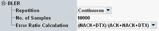

Settings
The settings configure the scope of the measurement.

BLER settings
Defines how often the measurement is repeated.
"Continuous" | The measurement is continued until it is explicitly terminated. The results are periodically updated. |
"Single-Shot" | The measurement stops automatically when the configured "No. of Samples" has been processed. |
Defines the number of DL transmissions to be processed per measurement cycle (a single-shot measurement covers one measurement cycle).
Remote command:Selects the formula to be used for calculation of the BLER from the number of ACK, NACK and DTX. NPDSCH decoding errors result in NACK while NPDCCH decoding errors result in DTX.
3GPP TS 36.521 specifies which formula must be used for a certain test.
The following formulae are available:
- BLER = (NACK + DTX) / (ACK + NACK + DTX)
- BLER = DTX / (ACK + NACK + DTX)
- BLER = NACK / (ACK + NACK + DTX)
- BLER = NACK / (ACK + NACK)